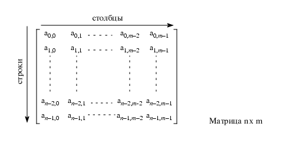
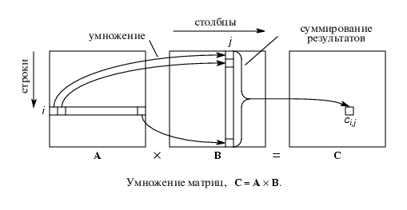

Решение системы линейных уравнений
Применение новейших вычислительных технологий дает очень большую выгоду при решении больших систем линейных уравнений.
С линейной алгеброй знаком каждый человек, соприкасающийся с вычислениями. Она, как никакая другая ветвь математики,
переплелась с многочисленными фундаментальными и прикладными приложениями. К задаче решения системы линейных алгебраических уравнений (СЛАУ) сводится огромное число физических и технических проблем.
Без новой техники многие из этих задач ранее были практически неразрешимы.
Многие реальные задачи сводятся к решению матричных задач.
Вспомним основные действия над матрицами.
Cистема уравнений Ax=b, где A - матрица, а x и b - вектора,
записывается в матричной форме в следующем виде:

Сложение матриц А+B=C состоит в сложении соотвествующих элементов
ai,j и bi,j и образовании
из них новой матрицы C:
ci,j=ai,j+bi,j (0<=i<n, 0<=i<m)
Умножение матриц A * B =C, где
A - матрица (n x l) и B - матрица (l x m)



 [Назад]
[Оглавление]
[Вперед]
[Назад]
[Оглавление]
[Вперед]
Последнее обновление 21.11.2001 WebMaster